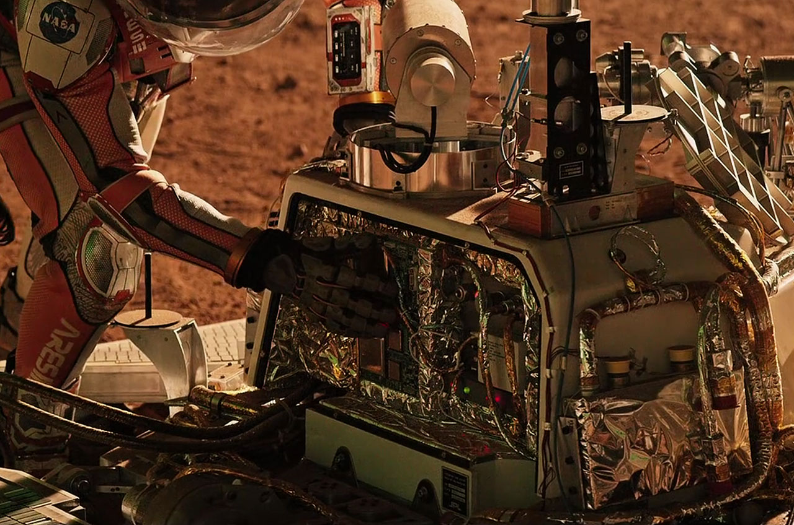

The Martian is a Hollywood motion picture about an astronaut named Mark Watney, who is left behind on Mars when his NASA exploration team flees the planet during a deadly dust storm. The team assumes Watney was killed by debris that was flung at him in the midst of this crisis, and, as a result, doesn't bother trying to find him. Unbeknownst to the team, he was still alive but had been knocked unconscious. The film follows Watney's journey surviving on Mars alone with little to no supplies, while attempting to make contact with Earth.
That right there, ladies and gentlemen, is the plotline for the entire movie. If you haven't watched it, I'll try not to spoil anything—but I won't make any promises!
One of the main issues Watney faced was food. How on Mars do you eat when you have practically no food left? This is where science comes walking in: Watney used regolith (Mars soil) mixed with human waste as fertilizer; water extracted from rocket fuel (I'll talk about this in a second) to nourish the plants; a little bit of Earth soil to introduce bacteria; and potato eyes from the team's Thanksgiving dinner. He used all this to create a mini farm inside the habitat module. Believe it or not, this is actually possible—it's one of the most ingenious ways to grow food on Mars.
Now what about water? It's the most essential, the most vital resource for life. Chemistry, please stand up. Watney used leftover hydrazine from the rocket fuel, and, with a catalyst, broke it down into H₂ and N₂ gases. He then took oxygen from the habitat's oxygenator (which converts carbon dioxide into oxygen) and burned the hydrogen with oxygen to form water (H₂O). This process is extremely dangerous—it can cause a massive explosion. In fact, that's exactly what happened when Watney first tried it.
Watney also communicated with Earth via Pathfinder, a Martian lander sent by NASA that landed in 1997 but lost contact a few months later. He trekked out to where Pathfinder had been sitting for decades and hauled it back to the habitat module. Once there, he repaired and rewired it, hooked it up to the module's solar panel, and used it to send an image to NASA and get instructions.
While it checked as many boxes as it could, and the filmmakers worked with NASA to ensure everything made sense scientifically, there are many caveats that hold it back from reaching a perfect scientific status—one of which is a serious story flaw.
At the beginning of the movie, the team is warned a massive wind/dust storm is approaching. When it hits the habitat module, the scene shows deadly chaos, tossing debris—and people—around. This… is impossible on Mars. A 100 mph wind there would feel like a gentle breeze because Mars's atmospheric pressure is less than one percent of Earth's. Mark Watney would never have been knocked unconscious by anything flung at him on Mars—the only thing that could really be swept up is dust. But to be fair, without that dust storm, there'd be no The Martian, so it gets a pass in my book.
If you want to learn more about Mars and why it's humanity's next destination, check out my blog Mars — The Red Frontier. In the meantime, stay curious and cosmological.